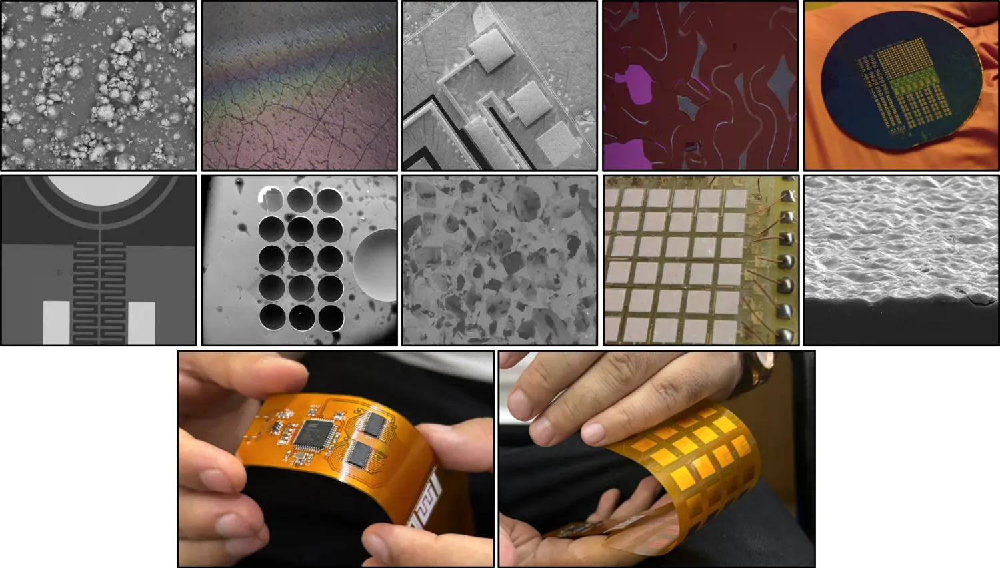

Flexible & wearable sensors
Soft, conformable devices for pressure, temperature, humidity, respiration, gait and human-motion monitoring.
- Nanocomposites
- E-skin
- Biomechanics

Flexible Sensors · MEMS · Printed Electronics
About me
I am an interdisciplinary researcher working at the intersection of functional materials, microfabrication, flexible electronics and intelligent sensing.
My research translates material innovation into complete engineering systems—from ink formulation and microdevice design to characterization, embedded electronics and machine-learning assisted interpretation. I am especially interested in wearable health technologies, self-powered systems, environmental sensing and solutions with a clear path toward real-world use.
Research
A connected research program spanning materials, fabrication, devices, embedded systems and intelligent signal processing.
Soft, conformable devices for pressure, temperature, humidity, respiration, gait and human-motion monitoring.
Ink formulation, rheology and electrohydrodynamic printing translated into reliable, scalable sensor platforms.
Multiphysics design and characterization of microdevices for magnetic sensing, energy harvesting and high-frequency switching.
Piezoelectric and triboelectric transduction combined with embedded electronics and machine learning.
Research approach
I combine experimental research, multiphysics simulation, fabrication, electronics and data-driven methods to take ideas beyond proof-of-concept.
Selected projects
Representative work in nanocomposite sensors, printed devices, sensor matrices and intelligent microsystems.
Published · Microsystems & Nanoengineering
Printed electronics · Research platform
Wearable health · Published research
MEMS · Emerging research direction
Publications
Academic journey
Visiting Researcher
Postdoctoral Researcher · Smart & Intelligent Sensors Lab
Research Associate · Integrated Devices & Systems
Ph.D. in Electrical Engineering · Best Thesis Award
Awards & recognition
IIT Delhi · 2024 · Recognition for doctoral research
Research on sustainable sensors and self-powered microsystems
IIT Delhi · Nanyang Technological University · Khalifa University
TRL-4 prototypes · patent applications · healthcare, robotics and AgriTech
Collaboration
I welcome discussions on research collaborations, joint proposals, academic opportunities, sensor commercialization and interdisciplinary projects.